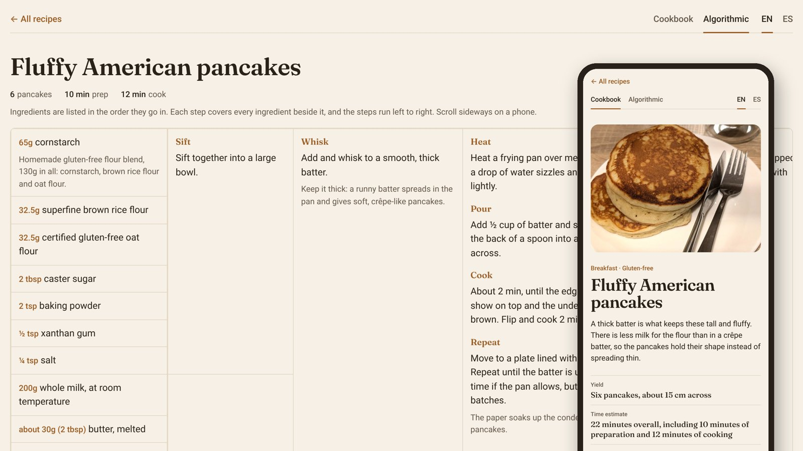
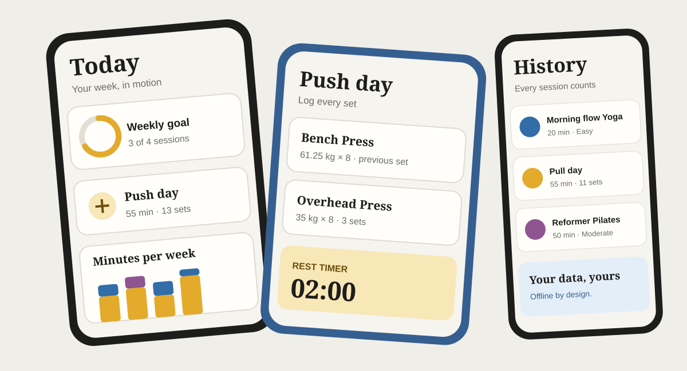

Software engineer working on Android at DuckDuckGo, and before that at Spotify. I'm a curious mind by nature, and I love learning things and putting them to use in everyday life: working out gluten-free cinnamon rolls after being told to go gluten-free, learning CAD to design and 3D print my own notebook cover, or building small, private apps for myself.
Personal projects

Open source · 4 Claude skills
algorithmic-recipe: recipe skills for Claude
A set of four Claude skills that turn any recipe, from a link, text or photo, into a page you can actually cook from, with each step right beside the ingredients it uses.
Two layouts: a human-friendly cookbook page with weights, volumes and scaling, or an algorithmic grid that reads like a program.
Gluten-free and dairy-free: converts a recipe using my own substitution rules, and either conversion feeds either layout.
A recipe website: a site template that publishes the pages in English and Spanish, behind a login.
Not loading? The site runs on Cloudflare, which some Spanish internet providers block during LaLiga football matches. Try again later or use a VPN.
Android app · written entirely by Claude
Pillbox
A private, offline medication tracker: weekly GLP-1 injections, daily tablets, supplements and as-needed painkillers. It shows what's due today, logs a dose in one tap, and keeps weight, blood pressure, side effects, appointments and health documents alongside, ready to share with a doctor as a PDF report. Nothing leaves the phone: no account, no cloud, no internet permission.
It's also a no-code experiment. All of its roughly 40,000 lines of Kotlin, its tests, CI and release builds were written by Claude agents in the cloud, from plain-language requests. I never wrote or reviewed a line of code: my only input was product direction, meaning what the app should do, which mock-up looked right and which pull request to merge.
Kotlin
Jetpack Compose
Offline
Agentic development

Android app · written entirely by Claude agents
Stronk
A private, offline training log for strength and everything else: workouts set by set, and yoga, Pilates, runs and rides logged as equals in the same week. Last time's numbers sit in each row, a rest timer starts when you tick a set, and records, estimated 1RM per lift and minutes per week across every kind of session add up on their own. A light weekly plan says what's on which day, the look turns from bold ink for lifting to soft washes for the mat, and any session can be shared as a story-sized image. Nothing leaves the phone: no account, no cloud, no internet permission.
It's also a no-code experiment. All of its roughly 21,000 lines of Kotlin, its tests, CI and release builds were written by Claude agents in the cloud, from plain-language requests. I never wrote or reviewed a line of code: my only input was product direction, meaning what the app should do, which mock-up looked right and which pull request to merge.